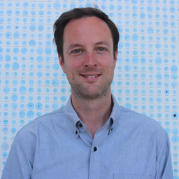
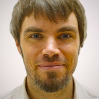
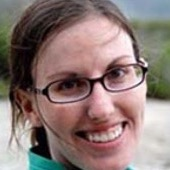
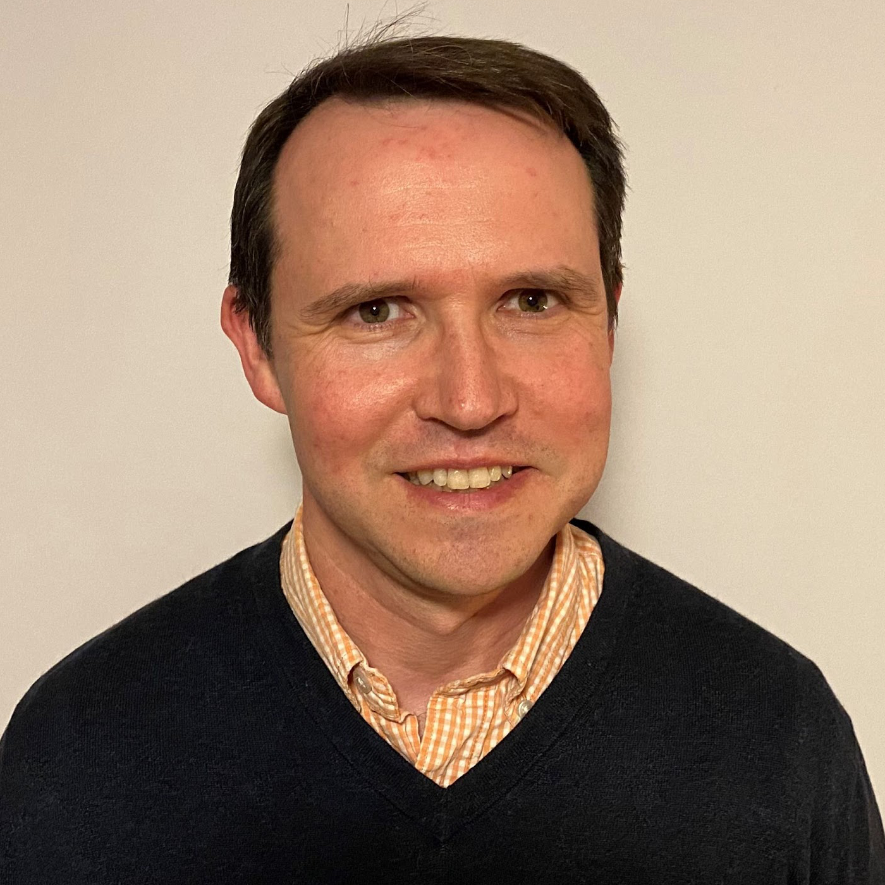
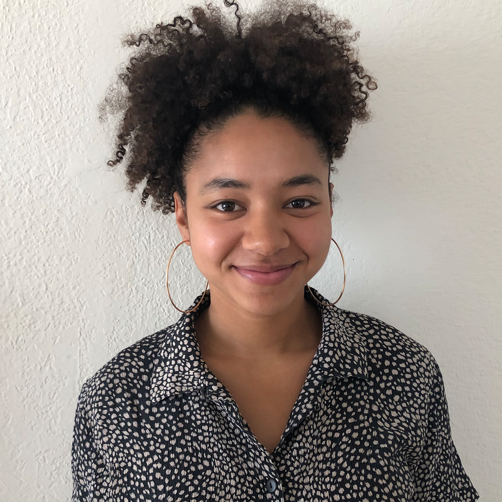

Applied Spatial Data Science for Public Health
This site contains the labs for Applied Spatial Data Science for Public Health, a course at UC Berkeley’s School of Public Health.
This course has been developed over the years by many contributors:

Hugh Sturrock
Hugh Sturrock is an Associate Professor of Epidemiology and Biostatistics at UCSF and is a spatial epidemiologist who’s work focuses on tropical diseases.

Adam Bennett
Adam Bennett is an Associate Professor of Epidemiology and Biostatistics at UCSF and is a spatial epidemiologist with a focus on malaria surveillance.
Francois Rerolle
Francois Rerolle is a PhD student in the department of Epidemiology and Biostatistics at UCSF, studying the epidemiology of malaria in high risk population in south-east Asia.

Amanda Irish
Amanda Irish is a PhD student in the department of Epidemiology and Biostatistics at UCSF, studying the relationship between housing and malaria using remotely sensed satellite imagery.

Adam Readhead
Adam Readhead is a senior epidemiologist with the California Department of Public Health, Tuberculosis Control Branch. His work focuses on the burden of tuberculosis among non-US-born persons, the costs of tuberculosis and the spatial distribution of the disease in California. He has worked in public health for 18 years in both international and domestic settings. He currently serves on the National TB Controllers Association workgroup on LTBI surveillance. Dr. Readhead received his PhD in epidemiology from UCLA and his master’s degree from Tulane University.
David Connell
David is an Instructional Designer for the Online MPH program at the School of Public Health, where he helps courses like this one run smoothly. He recently completed his MPH here at Berkeley in Global Health & Environment, and he did his undergrad in Environmental Science at RIT.

Erika Foster
Erika is in her final year of the joint MPH and Masters of City Planning Program. Her work centers on the built environment and the way that planning policies and practices impact public health. She received her BA in Environmental Science and Sociology at UC Santa Barbara.